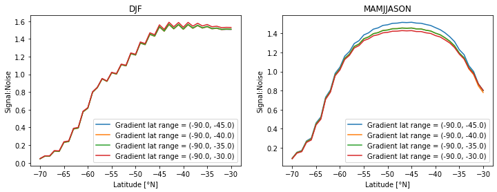
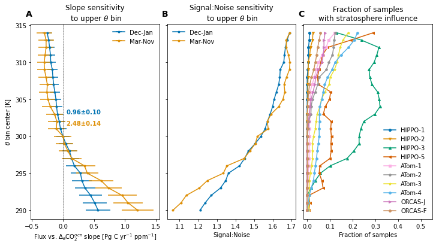
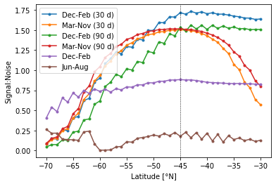
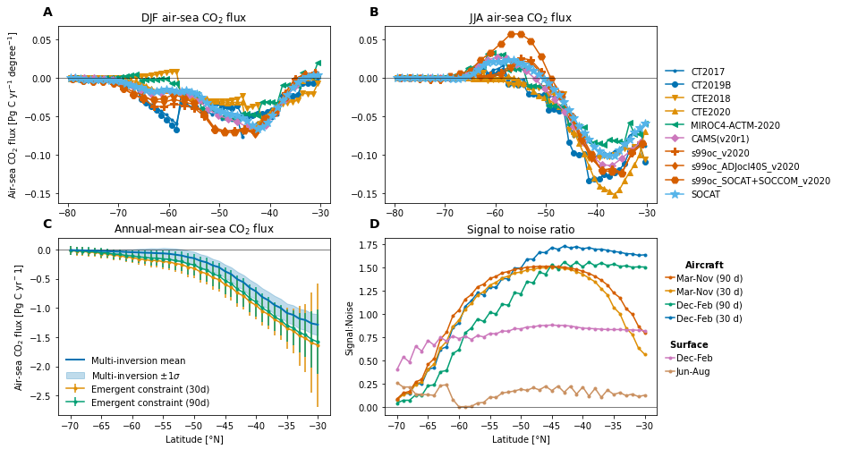

Sensitivity analysis of emergent constraint¶
%load_ext autoreload
%autoreload 2
The autoreload extension is already loaded. To reload it, use:
%reload_ext autoreload
import os
from itertools import product
import matplotlib.pyplot as plt
import matplotlib.gridspec as gridspec
import numpy as np
import pandas as pd
import xarray as xr
import dask
import datasets
import emergent_constraint as ec
import figure_panels
import obs_aircraft
import obs_surface
import models
import util
use_dask = True
if use_dask:
from ncar_jobqueue import NCARCluster
from dask.distributed import Client
cluster = NCARCluster()
cluster.scale(4)
client = Client(cluster) # Connect this local process to remote workers
else:
cluster = None
client = None
cluster
Compute constraint varying region boundary¶
max_lat = -30.
min_lat = -70.
flux_lat_ranges = [(-90., x) for x in np.arange(min_lat, max_lat+1, 1)]
flux_memory_dist = [30, 90]
ubin_dist = np.arange(290., 315, 1.)
gradient_lat_ranges = [(-90., x) for x in np.arange(-45., -30.+1., 5.)]
def df_constructor():
cols = ['flux_lat_range', 'gradient_lat_range', 'flux_memory', 'ubin',]
index = list(set(
[ndx for ndx in product(flux_lat_ranges, gradient_lat_ranges, flux_memory_dist, [300.],)] +
[ndx for ndx in product([(-90., -45.)], [(-90., -45.)], [90], ubin_dist,)]
))
df = pd.DataFrame(index, columns=cols).set_index(cols)
return df
df_constructor()
| flux_lat_range | gradient_lat_range | flux_memory | ubin |
|---|---|---|---|
| (-90.0, -35.0) | (-90.0, -35.0) | 90 | 300.0 |
| (-90.0, -36.0) | (-90.0, -45.0) | 90 | 300.0 |
| (-90.0, -45.0) | (-90.0, -45.0) | 90 | 304.0 |
| (-90.0, -69.0) | (-90.0, -40.0) | 90 | 300.0 |
| (-90.0, -38.0) | (-90.0, -35.0) | 90 | 300.0 |
| ... | ... | ... | ... |
| (-90.0, -42.0) | (-90.0, -30.0) | 90 | 300.0 |
| (-90.0, -45.0) | (-90.0, -45.0) | 90 | 296.0 |
| 290.0 | |||
| (-90.0, -38.0) | (-90.0, -45.0) | 90 | 300.0 |
| (-90.0, -45.0) | (-90.0, -45.0) | 90 | 292.0 |
352 rows × 0 columns
def signal2noise_flux(sc_or_ac, key):
"""compute signal to noise metric from ratio of estimated flux and associated error"""
if isinstance(sc_or_ac, ec.surface_constraint):
df = sc_or_ac.surface_flux
signal = df.loc[('2009-2020', key)].flux
noise = df.loc[('2009-2020', key)].flux_error
return np.abs(signal) / noise
elif isinstance(sc_or_ac, ec.aircraft_constraint):
df = sc_or_ac.campaign_flux
signal = df.loc[sc_or_ac.campaign_groups[key]].flux.mean()
noise = np.sqrt(
np.sum(df.loc[sc_or_ac.campaign_groups[key]].flux_error**2)
) / len(sc_or_ac.campaign_groups[key])
return np.abs(signal) / noise
def signal2noise(sc_or_ac, key):
"""compute signal to noise metric from constraint properties"""
N = int(1e6)
if isinstance(sc_or_ac, ec.surface_constraint):
ndx = ('2009-2020', key)
else:
ndx = key
beta = np.random.multivariate_normal(
mean=sc_or_ac.df_fits.loc[ndx].fit_beta,
cov=sc_or_ac.df_fits.loc[ndx].fit_cov_beta,
size=N,
)
signal = sc_or_ac.df_fits.loc[ndx].fit_beta[0]
noise = beta.std(axis=0)[0]
return np.abs(signal) / noise
%%time
clobber = False
clobber_deep = False
air_parms = ec.get_parameters('default')
obj_srf = {}; obj_air = {};
acs_lat = {};
acs_ubin = {};
scs = {};
dfs = {}
for constraint_type in ['ocean_constraint',]:
model_input_lists = ec.get_model_tracer_lists(constraint_type)
obj_srf[constraint_type] = ec.whole_enchilada_srf(**model_input_lists)
scs[constraint_type] = obj_srf[constraint_type].sensitivity(
'flux_lat_range', flux_lat_ranges, clobber=clobber, use_dask=use_dask,
)
for constraint_type in ['ocean_constraint',]:
model_input_lists = ec.get_model_tracer_lists(constraint_type)
obj_air[constraint_type] = ec.whole_enchilada(clobber=clobber_deep, **model_input_lists)
df = df_constructor()
results = []; acs = []
for ndx in df.index:
parameters = dict(**ec.get_parameters())
for n, name in enumerate(df.index.names):
parameters[name] = ndx[n]
results.append(
dask.delayed(obj_air[constraint_type].get_ac)(
**parameters,
clobber=clobber,
)
)
if len(results) == 12:
with util.timer(name=f'compute {len(results)}', normalize=len(results)):
acs.extend(dask.compute(*results))
print(f'completed {len(acs)}')
results = []
if results:
acs.extend(dask.compute(*results))
for key in acs[0].fit_groups:
df[f's2n_{key}'] = [ac.df_fits.loc[key].fit_s2n for ac in acs]
df['flux'] = [ac.estimate_ann_mean_flux[0] for ac in acs]
df['flux_err'] = [ac.estimate_ann_mean_flux[1] for ac in acs]
df['object'] = [ac for ac in acs]
dfs[constraint_type] = df
[compute 12]: 1.92090s/process
completed 12
[compute 12]: 1.76340s/process
completed 24
[compute 12]: 2.00661s/process
completed 36
[compute 12]: 2.17283s/process
completed 48
[compute 12]: 1.79268s/process
completed 60
[compute 12]: 2.00677s/process
completed 72
[compute 12]: 1.82041s/process
completed 84
[compute 12]: 2.08134s/process
completed 96
[compute 12]: 2.15109s/process
completed 108
[compute 12]: 1.77523s/process
completed 120
[compute 12]: 1.77058s/process
completed 132
[compute 12]: 1.84384s/process
completed 144
[compute 12]: 2.00792s/process
completed 156
[compute 12]: 2.15302s/process
completed 168
[compute 12]: 1.78228s/process
completed 180
[compute 12]: 1.75691s/process
completed 192
[compute 12]: 1.79337s/process
completed 204
[compute 12]: 1.73266s/process
completed 216
[compute 12]: 2.36044s/process
completed 228
[compute 12]: 1.67692s/process
completed 240
[compute 12]: 1.65035s/process
completed 252
[compute 12]: 1.79696s/process
completed 264
[compute 12]: 1.80964s/process
completed 276
[compute 12]: 1.88151s/process
completed 288
[compute 12]: 2.09539s/process
completed 300
[compute 12]: 1.67178s/process
completed 312
[compute 12]: 10.53219s/process
completed 324
[compute 12]: 7.72337s/process
completed 336
[compute 12]: 7.69750s/process
completed 348
CPU times: user 4min 40s, sys: 3min 54s, total: 8min 34s
Wall time: 16min 37s
if cluster is not None:
cluster.close()
client.close()
ubin = 300.
flux_memory = 90
constraint_type = 'ocean_constraint'
df = dfs[constraint_type]
fig, axs = util.canvas(1, 2)
for n, group in enumerate(['DJF', 'MAMJJASON']):
ax = axs[0, n]
s2n = np.empty((len(flux_lat_ranges), len(gradient_lat_ranges)))
for i, flux_lat_range in enumerate(flux_lat_ranges):
for j, gradient_lat_range in enumerate(gradient_lat_ranges):
s2n[i, j] = df.loc[(flux_lat_range, gradient_lat_range, flux_memory, ubin)][f's2n_{group}']
for j in range(len(gradient_lat_ranges)):
ax.plot([l[-1] for l in flux_lat_ranges], s2n[:, j],
label=f'Gradient lat range = {gradient_lat_ranges[j]}')
ax.set_xlabel('Latitude [°N]')
ax.set_ylabel('Signal:Noise')
ax.legend();
ax.set_title(group)

Sensitivity to θ-bin parameters¶
df_obs = obs_aircraft.open_aircraft_data('obs')
sel_loc = obs_aircraft.groups_select_profiles(df_obs, -90., -45., profiles_only=True)
df_obs = df_obs.loc[sel_loc][['campaign_id', 'theta', 'co2', 'strat']].where(df_obs.co2.notnull())
df_obs = df_obs.where(df_obs.campaign_id.notnull()).dropna()
df_obs
loading obs
| campaign_id | theta | co2 | strat | |
|---|---|---|---|---|
| 12900 | HIPPO-1 | 294.2498 | 383.3111 | 0.0 |
| 12901 | HIPPO-1 | 294.1424 | 383.2453 | 0.0 |
| 12902 | HIPPO-1 | 294.0021 | 383.2316 | 0.0 |
| 12903 | HIPPO-1 | 293.8232 | 383.4580 | 0.0 |
| 12904 | HIPPO-1 | 293.6586 | 383.6040 | 0.0 |
| ... | ... | ... | ... | ... |
| 338779 | ORCAS-F | 312.0988 | 400.0530 | 0.0 |
| 338780 | ORCAS-F | 311.8446 | 400.0580 | 0.0 |
| 338781 | ORCAS-F | 311.5282 | 400.0750 | 0.0 |
| 338782 | ORCAS-F | 311.2981 | 400.0690 | 0.0 |
| 338783 | ORCAS-F | 310.9262 | 400.0480 | 0.0 |
44516 rows × 4 columns
udθ = air_parms['udθ']
strat_influence = xr.DataArray(
np.zeros((len(df_obs.campaign_id.unique()), len(ubin_dist))),
dims=('campaign', 'theta'),
coords=dict(
campaign=xr.DataArray(df_obs.campaign_id.unique(), dims=('campaign'), name='campaign'),
theta=xr.DataArray(ubin_dist, dims=('theta'), name='theta')
),
)
for i, campaign in enumerate(df_obs.campaign_id.unique()):
for k, ubin in enumerate(ubin_dist):
theta_bin = (ubin - udθ / 2, ubin + udθ / 2)
sel = (df_obs.campaign_id == campaign)
sel = sel & (theta_bin[0] <= df_obs.theta) & (df_obs.theta <= theta_bin[1])
strat_influence.data[i, k] = df_obs.loc[sel].strat.mean()
constraint_type = 'ocean_constraint'
df = dfs[constraint_type]
relationship = ('Flux vs. $\Delta_{\\theta}$CO$_2^{ocn}$'
if constraint_type == 'ocean_constraint' else
'Flux vs. $\Delta_{\\theta}$CO$_2$'
)
ndx_vline = np.where(ubin_dist == 300.)[0][0]
fig, axs = util.canvas(1, 3, figsize=(4, 6), use_gridspec=True, wspace=0.06)
ax = axs[0, 0]
colors = list(figure_panels.palette_colors)
for n, group in enumerate(['DJF', 'MAMJJASON']):
label = 'Dec-Jan' if group == 'DJF' else 'Mar-Nov' if group == 'MAMJJASON' else group
slope = [df.loc[((-90., -45.), (-90., -45.), 90, ubin)].object.df_fits.loc[group].fit_beta[0]
for ubin in ubin_dist]
slope_err = [df.loc[((-90., -45.), (-90., -45.), 90, ubin)].object.df_fits.loc[group].fit_stderr_beta[0]
for ubin in ubin_dist]
ref = slope[ndx_vline]
ref_err = slope_err[ndx_vline]
c = colors.pop(0)
ax.errorbar(slope-ref, ubin_dist,
xerr=slope_err, marker='.', label=label,
color=c,
)
ax.text(0.05, 303-n*1.5, f'{ref:0.2f}±{ref_err:0.2f}', c=c, fontweight='bold')
ax.axvline(0., lw=0.5, c='k', linestyle='--')
ax.set_title(f'Slope sensitivity\n to upper $\\theta$ bin')
ax.set_xlabel(f'{relationship} slope [Pg C yr$^{{-1}}$ ppm$^{{-1}}$]')
ax.set_ylabel('$\\theta$ bin center [K]')
ax.legend(frameon=False);
ax = axs[0, 1]
colors = list(figure_panels.palette_colors)
s2n_ubin_djf = [df.loc[((-90., -45.), (-90., -45.), 90, ubin)].s2n_DJF for ubin in ubin_dist]
s2n_ubin_mamjjason = [df.loc[((-90., -45.), (-90., -45.), 90, ubin)].s2n_MAMJJASON for ubin in ubin_dist]
ax.plot(s2n_ubin_djf, ubin_dist, '.-', label='Dec-Jan', color=colors.pop(0))
ax.plot(s2n_ubin_mamjjason, ubin_dist, '.-', label='Mar-Nov', color=colors.pop(0))
ax.set_title(f'Signal:Noise sensitivity\n to upper $\\theta$ bin')
ax.set_xlabel('Signal:Noise')
ax.set_yticklabels([])
ax.legend(frameon=False);
ax = axs[0, 2]
marker_spec = figure_panels.marker_spec_campaigns()
for c in strat_influence.campaign.values:
ax.plot(strat_influence.sel(campaign=c),
strat_influence.theta,
label=c, **marker_spec[c], markersize=4)
ax.set_title('Fraction of samples\nwith stratosphere influence')
ax.set_yticks(axs[0, 0].get_yticks())
ax.set_ylim(axs[0, 0].get_ylim())
ax.set_yticklabels([])
xlm = ax.get_xlim()
ax.set_xlim((xlm[0], 0.55))
ax.set_xlabel('Fraction of samples')
ax.legend(frameon=False, loc='lower right', ncol=1);
util.label_plots(fig, [ax for ax in axs.ravel()], xoff=-0.01, yoff=0.03)
util.savefig(f'theta-bin-S2N-{constraint_type}')

Examine dependence on bounding latitude¶
constraint_type = 'ocean_constraint'
df = dfs[constraint_type]
ubin = 300.
gradient_lat_range = (-90., -45.)
acs = {
flux_memory: [df.loc[(flux_lat_range, gradient_lat_range, flux_memory, ubin)].object
for flux_lat_range in flux_lat_ranges]
for flux_memory in flux_memory_dist
}
s2n_air = {}
for flux_memory in [30, 90]:
assert acs[flux_memory][0].flux_memory == flux_memory
for group in acs[flux_memory][0].campaign_groups.keys():
period = 'Mar-Nov' if group == 'MAMJJASON' else 'Dec-Feb' if group == 'DJF' else group
key = f'{period} ({flux_memory} d)'
s2n_air[key] = [ac.df_fits.loc[group].fit_s2n for ac in acs[flux_memory]]
ec_flux_estimate = {}
for flux_memory in [30, 90]:
key = f'Emergent constraint ({flux_memory}d)'
ec_flux_estimate[key] = [ac.estimate_ann_mean_flux for ac in acs[flux_memory]]
s2n_srf = {}
for group in ['DJF', 'JJA']:
period = 'Dec-Feb' if group == 'DJF' else 'Jun-Aug' if group == 'JJA' else group
key = f'{period}'
s2n_srf[key] = [sc.df_fits.loc[('2009-2020', group)].fit_s2n for sc in scs[constraint_type]]
lat = [l[-1] for l in flux_lat_ranges]
for key, values in s2n_air.items():
plt.plot(lat, values, '.-', label=key,)
for key, values in s2n_srf.items():
plt.plot(lat, values, '.-', label=key,)
#plt.axhline(1., c='k', lw=0.5)
plt.axvline(-45, c='k', lw=0.5, linestyle='--')
plt.legend();
plt.xlabel('Latitude [°N]')
plt.ylabel('Signal:Noise');

Compute inversion and pCO2-based zonal-mean, seasonal fluxes¶
sfco2_ocn_inversions = []
for m, t in model_input_lists['model_tracer_list']:
if not any(s in m for s in ['TM5', 'CESM', 'prior']) and m not in sfco2_ocn_inversions:
sfco2_ocn_inversions.append(m)
sfco2_ocn_inversions
['CT2017',
'CT2019B',
'CTE2018',
'CTE2020',
'MIROC',
'CAMSv20r1',
's99oc_v2020',
's99oc_ADJocI40S_v2020',
's99oc_SOCCOM_v2020']
sfco2_ocn_soccom = [
'TM5-Flux-m0f', 'TM5-Flux-mwf', 'TM5-Flux-mmf',
]
sfco2_ocn_pco2_clim = ['SOM-FFN',]
%%capture
dsets_za_djf = {}
dsets_za_jja = {}
for model in sfco2_ocn_inversions+sfco2_ocn_pco2_clim:
mobj = models.Model(model)
ds = mobj.open_derived_dataset(
'fluxes_za_ts_monthly',
).sel(time=slice('1998', '2020'), lat=slice(-80., -30.))
with xr.set_options(keep_attrs=True):
ds = ds.groupby('time.season').mean('time')
dsets_za_djf[model] = ds.sel(season='DJF').compute()
dsets_za_jja[model] = ds.sel(season='JJA').compute()
Compute cumulative-sum of fluxes as a function of latitude¶
%%capture
ds_cum_cache_file = f'{datasets.cache_dir}/sfco2-inversions-cumsum-lat.nc'
if os.path.exists(ds_cum_cache_file) and not clobber:
ds_cum = xr.open_dataset(ds_cum_cache_file)
else:
dsets_cum = {}
for model in sfco2_ocn_inversions:
mobj = models.Model(model)
ds_list = []
for lat_range in flux_lat_ranges:
ds = mobj.open_derived_dataset(
'flux_ts_monthly', lat_range=lat_range
).sel(time=slice('1998', '2020'))
with xr.set_options(keep_attrs=True):
dss = ds.groupby('time.season').mean('time').compute()
ds_list.append(dss)
dsets_cum[model] = xr.concat(ds_list,
dim=xr.DataArray(
[rng[-1] for rng in flux_lat_ranges],
dims=('lat'),
name='lat')
)
model = xr.DataArray(sfco2_ocn_inversions, dims=('model'), name='model')
ds_cum = xr.concat([dsets_cum[m].SFCO2_OCN for m in sfco2_ocn_inversions], dim=model).to_dataset()
ds_cum.to_netcdf(ds_cum_cache_file)
ds_cum = ds_cum.sel(lat=slice(min_lat, max_lat))
flux_inv_lat = ds_cum.lat
flux_inv_mean = ds_cum.SFCO2_OCN.mean(['model', 'season'])
flux_inv_std = ds_cum.SFCO2_OCN.mean(['season']).std('model')
plt.plot(flux_inv_lat, flux_inv_mean, color='k', lw=2)
plt.fill_between(flux_inv_lat, flux_inv_mean - flux_inv_std,
flux_inv_mean + flux_inv_std, alpha=0.2)
<matplotlib.collections.PolyCollection at 0x2b29f4561350>
fig, axs = util.canvas(2, 2, wspace=0.25)
marker_spec = figure_panels.marker_spec_models()
#--- DJF flux
ax = axs[0, 0]
for model, ds in dsets_za_djf.items():
ax.plot(ds.lat, ds.SFCO2_OCN, **marker_spec[model]['CO2_OCN'])
ax.set_ylabel(f'Air-sea CO$_2$ flux [{ds.SFCO2_OCN.units}]')
ax.set_title('DJF air-sea CO$_2$ flux')
ax.axhline(0, lw=0.5, color='k')
ylm_djf = ax.get_ylim()
#--- JJA flux
ax = axs[0, 1]
for model, ds in dsets_za_jja.items():
ax.plot(ds.lat, ds.SFCO2_OCN, **marker_spec[model]['CO2_OCN'])
ax.set_title('JJA air-sea CO$_2$ flux')
ax.axhline(0, lw=0.5, color='k')
ylm_jja = ax.get_ylim()
h, l = ax.get_legend_handles_labels()
leg1 = ax.legend(h[:], l[:], frameon=False,
loc=(1.02, 0.));
# leg2 = ax.legend(h[2:], l[2:], frameon=False,
# loc=(0.02, 0.01));
#ax.add_artist(leg1)
ylm = [np.min((ylm_djf[0], ylm_jja[0])), np.max((ylm_djf[1], ylm_jja[1])),]
axs[0, 0].set_ylim(ylm)
axs[0, 1].set_ylim(ylm)
#--- cumulatice flux with latitude
ax = axs[1, 0]
colors = list(figure_panels.palette_colors)
p = ax.plot(
flux_inv_lat, flux_inv_mean, lw=2,
zorder=10, label='Multi-inversion mean',
c=colors.pop(0),
)
ax.fill_between(flux_inv_lat,
flux_inv_mean - flux_inv_std,
flux_inv_mean + flux_inv_std,
alpha=0.25, zorder=-10,
color=p[0].get_color(),
label='Multi-inversion ±1$\sigma$'
)
lat = [l[-1] for l in flux_lat_ranges]
for key, values in ec_flux_estimate.items():
ax.errorbar(lat, [v[0] for v in values],
yerr=[v[1] for v in values],
color=colors.pop(0),
marker='.', label=key,)
ax.set_ylabel(f'Air-sea CO$_2$ flux [Pg C yr$^{-1}$]')
ax.set_title('Annual-mean air-sea CO$_2$ flux')
ax.axhline(0, lw=0.5, color='k')
ax.set_xlabel('Latitude [°N]')
ax.legend(frameon=False);
#--- signal to noise ratio
ax = axs[1, 1]
#p = ax.plot(df.lat_ubnd, df.s2n_djf, '.-', label=f'Dec-Feb')# ({flux_memory}d)')
#ax.plot(df.lat_ubnd, df.s2n_mamjjason, '.-', label=f'Mar-Nov')# ({flux_memory}d)')
colors = list(figure_panels.palette_colors)
lat = [l[-1] for l in flux_lat_ranges]
for key, values in s2n_air.items():
ax.plot(lat, values, '.-', label=key, c=colors.pop(0))
for key, values in s2n_srf.items():
ax.plot(lat, values, '.-', label=key, c=colors.pop(0))
ax.legend();
ax.axhline(0, lw=0.5, color='k')
ax.set_title('Signal to noise ratio')
ax.set_ylabel(f'Signal:Noise')
ax.set_xlabel('Latitude [°N]')
ylm = np.array(ax.get_ylim())
ax.set_ylim(ylm)
h, l = ax.get_legend_handles_labels()
order_ndx = [3, 1, 2, 0] #[1, 3, 0, 2,]
lg1 = ax.legend([h[i] for i in order_ndx], [l[i] for i in order_ndx],
frameon=False,
loc=(1.02, 0.5), #'upper right',
handletextpad=0.15,
handlelength=1,
title='$\\bf{Aircraft}$'
)
order_ndx = [-2, -1]
lg2 = ax.legend([h[i] for i in order_ndx], [l[i] for i in order_ndx],
frameon=False,
loc=(1.02, 0.2), #'upper right',
handletextpad=0.15,
handlelength=1,
title='$\\bf{Surface}$'
)
ax.add_artist(lg1)
#axs[0, 0].set_xlim(ax.get_xlim())
#axs[0, 1].set_xlim(ax.get_xlim())
util.label_plots(fig, axs.ravel(), xoff=-0.02)
util.savefig(f'fluxes-region-S2N-{constraint_type}.pdf')
